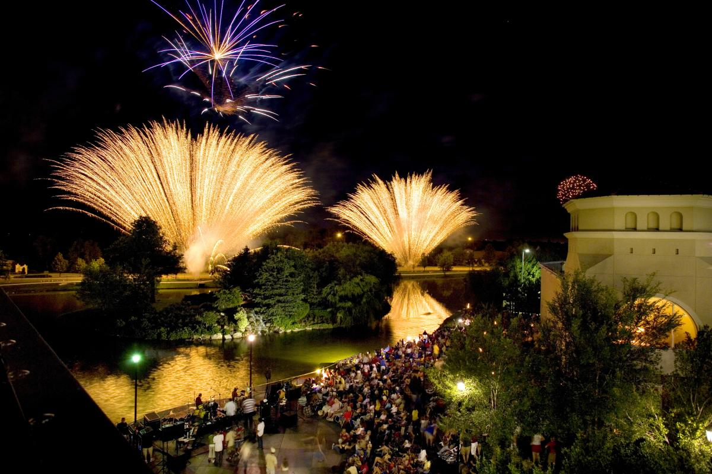

Date: Tuesday, June 24th - 6:30pm
Meet at Andover Central Park at 6:30 for some ultimate frisbee. Will then head back to Zach's place to make s'mores. Will be an opportunity to provide input and ideas for SALT moving forward.
Location: Andover Central Park 1607 E Central Ave, Andover, KS 67002
Date: Thursday, June 26th - 7pm
Night of worship, fellowship, prayer, Scripture, and fun.
Location: Freedom Farm 13540 SW 30th St. Benton, KS 67017
Date: Tuesday, July 1st - 7pm
Will have mini tortillas and basic pizza toppings (cheese, hamburger, pepperoni) that you can use to make your own pizza, but feel free to bring your own toppings, sides, or drinks, to share with everyone. Small groups will meet after we eat.
Location: Zach's house - feel free to reach out for the address if you need it.
Date: Thursday, July 3rd - 7pm
Celebrate with us as we have a night of worship, fellowship, and scripture at 7pm. Then at 8:30pm we will head to Bradley Fair to watch fireworks over the water at their summer concert event.
Location:
Salt Night: Freedom Farm
13540 SW 30th St. Benton, KS 67017
Fireworks: Bradley Fair 2132 N Rock Rd Suite 102, Wichita, KS 67206

Date: Thursday, July 10th - 7pm
Night of worship, fellowship, prayer, Scripture, and fun, outdoors in the Park. Tentative location is either Andover Central Park or 13th St Sports Park, but subject to change.
Location: Andover Central Park 1607 E Central Ave, Andover, KS 67002
Date: Saturday, July 12th - 1pm
Meet at the Greenwhich Target parking lot and carpool to different parts of town. There is no set schedule, just hang out together and take some time to notice people and show kindness to them. Buy a homeless person a meal, get a slushee for someone who seems to be having a bad day, go out of your way to encourage a fast food employee, etc. Can be literally any act of kindness. Pray that your random act of kindness might open up an opportunity to share Christ with that person. Will meat back up at Target after a few hours and each car will be able to share what happened. Then go get ice cream together.
Meetup Location: Target 10800 E 21st St N, Wichita, KS 67206
If you have an idea for an event please let us know on the Get Involved page.
More events will continue to be added...